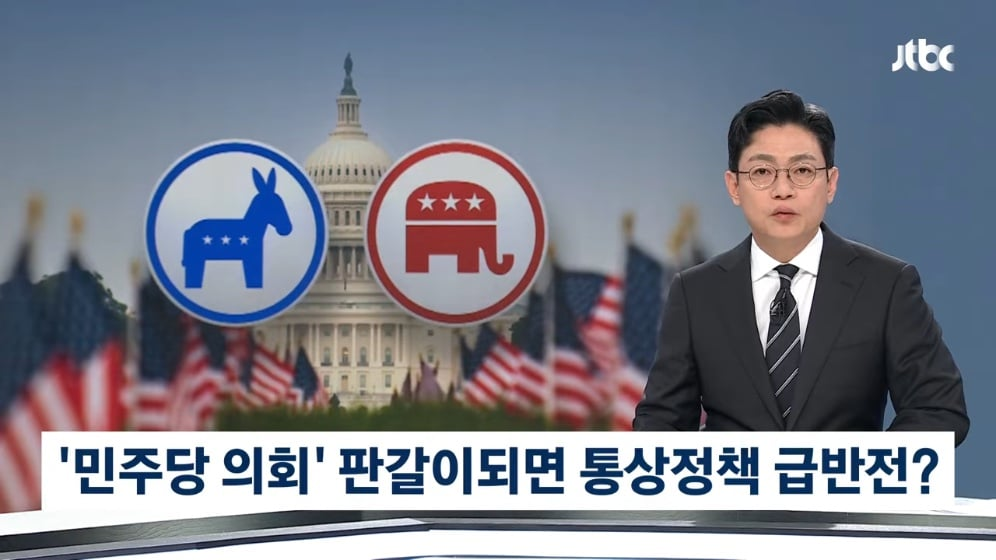
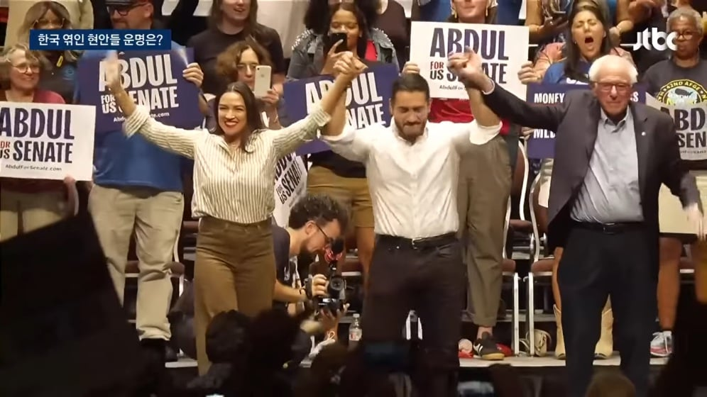
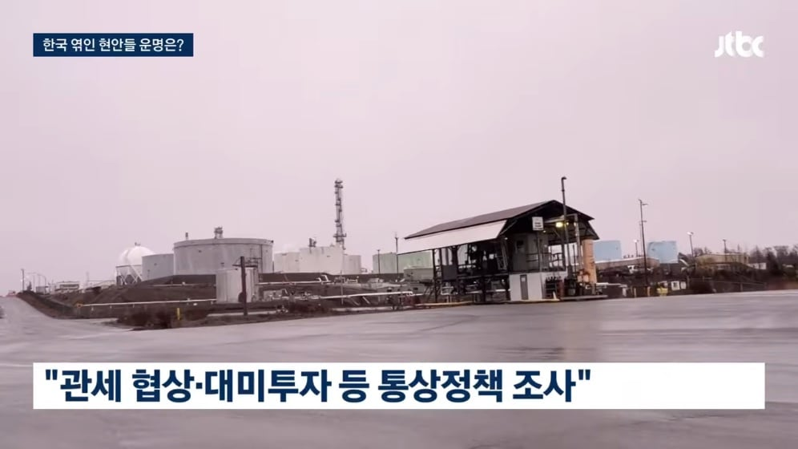
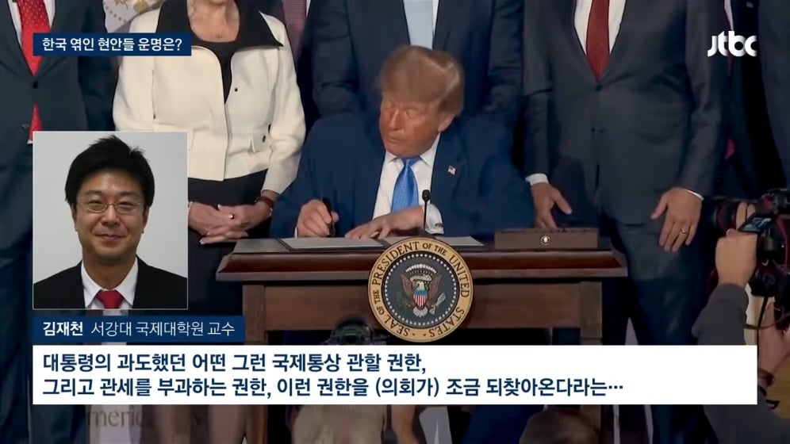
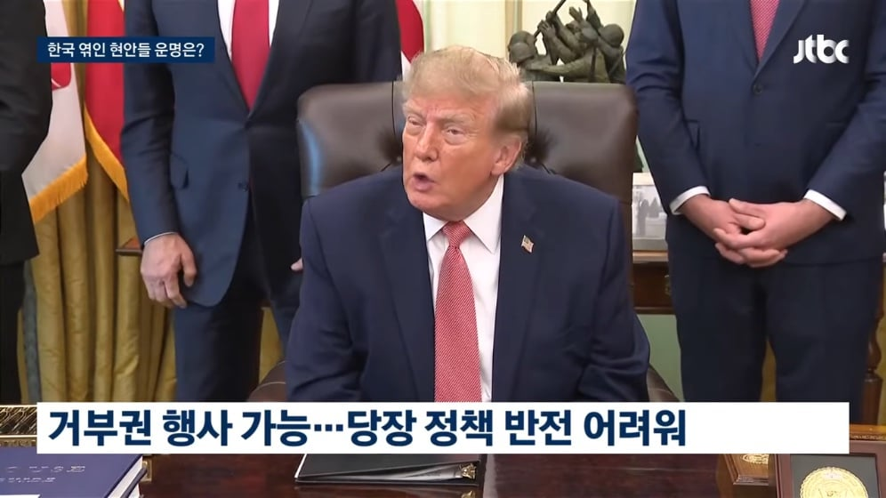
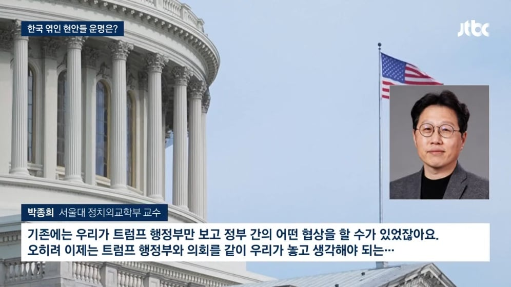
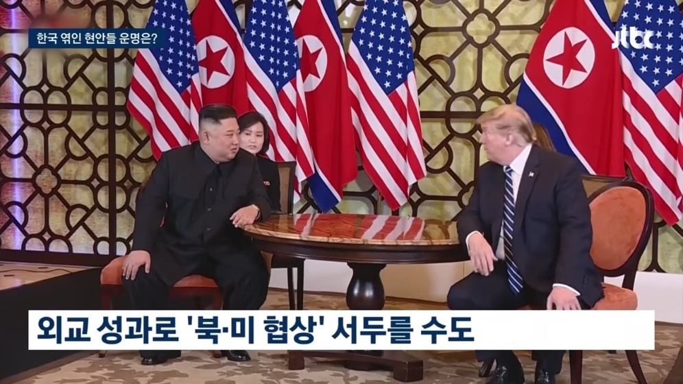
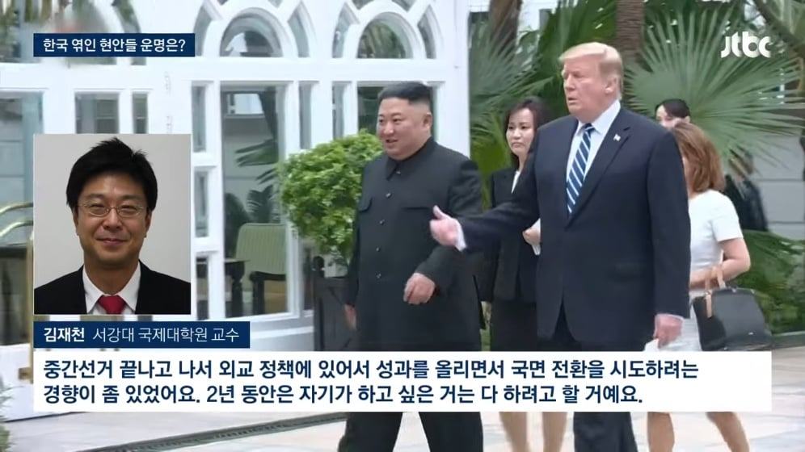

관세협상, 대미투자 : 트럼프와 의회 투웨이로 협상을 진행하게 될 수 있음
북미관계 : 트럼프가 외교성과를 내기 위해 북미협상을 서두를 가능성이 있음








관세협상, 대미투자 : 트럼프와 의회 투웨이로 협상을 진행하게 될 수 있음
북미관계 : 트럼프가 외교성과를 내기 위해 북미협상을 서두를 가능성이 있음
2년동안은 자기가 하고 싶은 거 다 할거라니
.. 지금보다 더??
발악한다 뭐 그런 뜻임
의회와 격렬하게 싸울 것이라는 뜻
도람뿌 : 바이낸..스 반띵 가능?
레임덕 빠지면, 국내에서 할 게 없으니 외교 관계에 신경 많이 쓰게 됨.
고로 트럼프가 여기저기 들쑤시고 다닐 수 있다는거지.
러트닉과 배런 트럼프, 두 놈만 이라도 구속하면 좋겠어.
사상 최고의 레임덕 or 탄핵
탄핵은 불가능 과반수를 훨씬 넘겨야함..
이번 선거가 트럼프 평가도 있지만
조기 대선도 있어서
꼭 트럼프 싫어! 하고 찍는 선거는 아님
그냥 거부권 발동이 시작될거임
민주당이라고 우리한테 좋은 것만 있지도 않고...그냥 우리 힘들게 했던 트럼프 좀 억제할 것 같으니 그나마 숨통 트이지 않을까 하는 정도.
어짜피 미국에 유리한 협상이면, 민주당도 유지하려고 할거라 큰 기대도 안 함.
그리고 무엇보다, 민주당이 상하원 다 이기지 못 할 가능성도 꽤 높기 때문에, 중간 선거는 그냥 중간 선거고....우리는 알아서 잘 해야지....
외교쪽에서 국회가 할수 있는게 존나 제한적임
그리고 민주당은 다음 대선 전까지 트럼프 정부와 힘을 합해 뭐 민생을 바꿔보고 뭐 이런걸 할 생각이 없음
그리고 선거결과는 차치하고 이번 선거 지나면
트럼프는 이제 재선도 안되겠다 민심을 전혀 고려하지 않고 진짜로 지 하고싶은건 다 하기 시작할거임
민주당이 국회 장악하면 예산 관련해서는 막을 수 있겠지만 정말 말도 안되는 방식으로 밀어붙일텐데 막을 수 있을지 의문임
다른 건 다 알겠는데 트럼프 정부가 뭐라고 힘을 합쳐 민생을 바꿔ㅋㅋㅋㅋ
걔들 우리 민생 ㅈ도 관심 없겠구먼.
그냥 럼프행님 휘드르는 관세 방망이에 납작엎드리냐 고개 쳐들고 반발하냐 차이지.
내가 우리나라 민생 얘기한거겠냐고 ..
민주당이 트럼프 보면서 무슨 생각을 하냐면
'이게 된다고?' 임
럼프가 탄핵을 당하던 정권이 바뀌던 외교 성황이 급반전 할거라는 기대는 접는게 좋음
당장 웨스트하우스없이 원전 수주할 생각조차 가지지도마라 협상 요구하던게 바이든 시대였음
전에 무슨 유명한 통상교섭본부장인가 강연 들었는데 정권바뀌어봤자 관세나 투자 같은건 이미 돈맛을 봐서 바뀌기 쉽지않을 거라더라. 그냥 뉴노멀로 받아들이고 대응 생각해야한다고.
결과 어떻게되건 중간선거가 약간은 억제기같은 느낌이었는데 더 개지랄할거 같음
누가 되든 미국의 자국우선주의 기조는 안변함. 차이점이라고 한다면 트럼프의 공화당은 적극적인 개입으로 자국의 이익을 챙기려고 하는 반면 민주당은 그때 만들어졌던 자국이익 중심 정책을 그대로 유지해나가는 소극적인 방식으로 할거임
생각해보면, 한국이 동남아 3국한테 호구 수준의 외교 딜을 받았다고 가정했을 때, 바뀐 정권이 아무런 딜 없이 원복한다고 한다?
"꿀통을 왜 셀프로 걷어참? 너 병신임?" 소리 밖에 더하겠나 싶음
드라마틱한 기대는 안하는게 맞는듯
어차피 상원을 대통령 거부권까지 무시할정도로 장악하는거도 아니고 별 차이 없을꺼 같은데
민주당도 미국 정당이야
달라지는건 없어
국제정치는 니편 내편이 없음 힘의 대결 장소지
국장엔 호재냐 악재냐
바이든 됐다고 반도체로 뒷통수 안 쳤냐?
급반전 될거라 생각하는게 이상한거지
우리나라랑 다름
저기는 국익 위해서 뭉침
한국은 양쪽다 국익을 최우선 안함
아무튼 반도체 투자 이런거 뭐 없어 지지는 않음
트럼프가 욕처먹으면서 해놧던거
안사라진다 ㅋㅋ
한국 언론들은 1기 두번 당선될때까지 도람뿌가 대통령이 안된다 여론이 안좋다 계속 부정적인 기사만 내보내서
한국 사람들은 도람뿌가 대통령 안될줄 알았더랬지
관세세율은 낮아져야 하는거 아닌가? 캐나다 관세50% 이런게 계속 유지 가능하겠음?
물가+유가 때문에 공화당이 쳐박히는건데
딱 그 정도라고 보는게 맞는듯
합리적인 선에서의 관세 조정
유가는 노머고 병신이 사실 전쟁 일으켰던 영향이 더 크고, 물가는 뭐... 미국놈들 평균 능지면 진짜 관세를 수출 국가가 내는 줄 알거임
드라마틱한 변화는 없지만 공화당 내 파열음은 좀 생기겠네
결국 미국의 단독 패권의 질서에서 다극다자주의로 전환되는 과정에 있는 것 같아
여기서 우리나라가 영리하게 잘 처신하면서 이 난관을 잘 헤쳐나가길 바래야겠지
아마 ㅈ럼프가 다 거부권 때리고 내년 예산안도 개판되고 셧다운 오고 단기 예산안으로 가고, ㅈ럼프 1기처럼 될거라고 봄.
러시아 건만 어떻게 잘 수습되길 빌어야 함
민주당이 동맹국을 얼마나 신경쓰냐에따라 달라질것같은데
지금은 걍 트럼프 반대표만 던질 것 같아서 이득볼건없을듯
뭐가 되든지 간에 한국은 머리 많이 써야함. 민주당이 된다고 좋아할 것도 공화당이 된다고 울상쓸 것도 없음 언제나 국제 관계는 미친듯이 힘든거고 우린 우리의 이익을 가장 많이 가져가 ㄹ 방법을 찾아야함